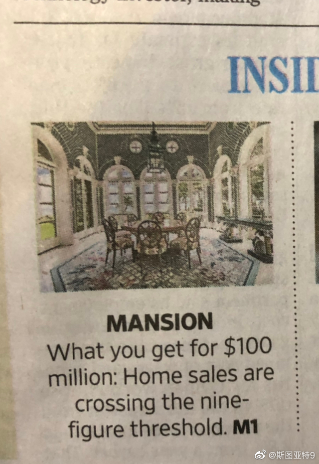

用里程换了大半年《Wall Street Journal》这事干得非常后悔。每天一打报纸基本没时间看很不环保不说，感觉这报纸就不是给我看的。没兴趣都有个房地产专栏，里面都在介绍各种千万豪宅，最新这一期登峰造极，直接介绍一亿美元能买的房子。这报纸得是给多富有的人看的啊。还有它周末书评，基本上都极其深奥，我没有一篇看得懂。
据说发展心理学这个世纪的新趋势有两个：一是更强调基因的作用，另一个是更强调了环境的影响。看上去矛盾的两点其实并不矛盾：人的认知发育可以更多的找到基因的因素，但环境对于基因是否表达以及如何表达的影响远比之前认为的大得多。
在微博上搜索“华为 食堂”的搜索结果基本上全都是去华为食堂蹭饭之后表达满满的羡慕之情的。这听上去伙食很好啊，为什么还会有CEO发文骂投诉食堂伙食差这一出的。另外，CEO公开说员工“不成熟”，说抱怨的人应该去食堂帮厨三个月，这是不是继承了外交部发言人的风格啊？